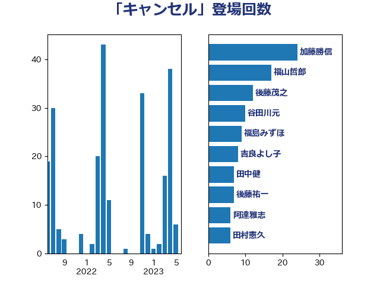

単語「キャンセル」

| 加藤勝信 | 自由民主党 | 24 回 |
| 福山哲郎 | 立憲民主党 | 17 回 |
| 後藤茂之 | 自由民主党 | 12 回 |
| 谷田川元 | 立憲民主党 | 10 回 |
| 福島みずほ | 社会民主党 | 9 回 |
| 吉良よし子 | 日本共産党 | 8 回 |
| 田中健 | 国民民主党 | 7 回 |
| 後藤祐一 | 立憲民主党 | 7 回 |
| 阿達雅志 | 自由民主党 | 6 回 |
| 田村憲久 | 自由民主党 | 6 回 |
| 井坂信彦 | 立憲民主党 | 6 回 |
| 近藤和也 | 立憲民主党 | 5 回 |
| 萩生田光一 | 自由民主党 | 4 回 |
| 宮本徹 | 日本共産党 | 4 回 |
| 打越さく良 | 立憲民主党 | 3 回 |
| 岸田文雄 | 自由民主党 | 3 回 |
| 伊藤俊輔 | 立憲民主党 | 3 回 |
| 辻元清美 | 立憲民主党 | 2 回 |
| 藤岡隆雄 | 立憲民主党 | 2 回 |
| 田村智子 | 日本共産党 | 2 回 |
| 浜口誠 | 国民民主党 | 2 回 |
| 末松信介 | 自由民主党 | 2 回 |
| 岸真紀子 | 立憲民主党 | 2 回 |
| 今井絵理子 | 自由民主党 | 2 回 |
| たがや亮 | れいわ新選組 | 2 回 |
| 高見康裕 | 自由民主党 | 1 回 |
| 高橋千鶴子 | 日本共産党 | 1 回 |
| 長妻昭 | 立憲民主党 | 1 回 |
| 鈴木義弘 | 国民民主党 | 1 回 |
| 野田佳彦 | 立憲民主党 | 1 回 |
| 秋葉賢也 | 自由民主党 | 1 回 |
| 福島伸享 | 無所属 | 1 回 |
| 石破茂 | 自由民主党 | 1 回 |
| 石垣のりこ | 立憲民主党 | 1 回 |
| 石井苗子 | 日本維新の会 | 1 回 |
| 白石洋一 | 立憲民主党 | 1 回 |
| 田村まみ | 国民民主党 | 1 回 |
| 牧山ひろえ | 立憲民主党 | 1 回 |
| 渡辺創 | 立憲民主党 | 1 回 |
| 浜田聡 | NHK党 | 1 回 |
| 浅野哲 | 国民民主党 | 1 回 |
| 河野太郎 | 自由民主党 | 1 回 |
| 永岡桂子 | 自由民主党 | 1 回 |
| 榛葉賀津也 | 国民民主党 | 1 回 |
| 枝野幸男 | 立憲民主党 | 1 回 |
| 松野博一 | 自由民主党 | 1 回 |
| 木村英子 | れいわ新選組 | 1 回 |
| 早坂敦 | 日本維新の会 | 1 回 |
| 庄子賢一 | 公明党 | 1 回 |
| 平沼正二郎 | 自由民主党 | 1 回 |
| 岡本あき子 | 立憲民主党 | 1 回 |
| 山田太郎 | 自由民主党 | 1 回 |
| 山添拓 | 日本共産党 | 1 回 |
| 山岸一生 | 立憲民主党 | 1 回 |
| 山下芳生 | 日本共産党 | 1 回 |
| 小川淳也 | 立憲民主党 | 1 回 |
| 大石あきこ | れいわ新選組 | 1 回 |
| 塩村あやか | 立憲民主党 | 1 回 |
| 佐々木さやか | 公明党 | 1 回 |
| 仁木博文 | 無所属 | 1 回 |
| 井上哲士 | 日本共産党 | 1 回 |
| 丸川珠代 | 自由民主党 | 1 回 |
| 中川宏昌 | 公明党 | 1 回 |
| 三上えり | 立憲民主党 | 1 回 |